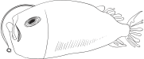
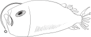

As we reopen, we need to manage our capacity to ensure everyone has a safe and enjoyable visit. The best way to do this is to ensure that all of our visitors are pre-booked, including those with passes, already in possession of tickets or wishing to use a promotional voucher.
Pre-booking essential
2020.10.18

Dismisses accusations of animal abuse
2020.10.15
Xpark in a statement rejected allegations of animal abuse, saying it has adopted rigorous standards to attend to the animals.
As the aquarium has more than 10,000 marine animals, there might be occasional injuries or some creatures might still be adapting to their new environment, it said, adding that proper medical treatment has been applied.
Many accusations against Xpark are false and reflect people’s lack of understanding about marine life, it said, citing as an example jellyfish losing tentacles, which it said is a natural phenomenon.
The aquarium would improve its public communication and promotion of ocean life, it said, but added that it would take legal action against false accusations.
Covid19-Information for Guests
2020.9.15

We are open- and we can't wait to 'sea' you! We love bringing you closer to the oceans through amazing discoveries! Since we closed in March, we’ve been working tirelessly to make sure that we can welcome you back in the safest way possible.
Our team of health and safety experts have created a plan which will enable us to deliver on our promise of keeping your well-being and safety as our top priority. Some of the measures may be clearly visible to you from the moment you arrive at the attraction and others require consideration from our guests to help ensure everyone has a magical visit.
Welcome our newborn penguin chick!
2020.9.02

One newly hatched penguin chick born recently at Xpark haven't been given name.
Due to the current ongoing coronavirus pandemic, Xpark decides to pay tribute by using the NHS as the theme when it comes to naming the new baby.
They appeals to the whole country for suggestions of NHS hospitals and heroes that the chick could be named after, and is inundated with suggestions of hospitals from across the whole country.
Fuzzy Newborn Penguin
Here's how you can help
name the baby penguins at Xpark 2020.10.20

當季特展
海洋生態攝影巡迴展2020.9.20

我們開幕囉!
台灣獨創「Xpark x UNIQLO
T恤入場券」歡慶Xpark開幕！2020.10.10

Aquarium staff say they have started noticing our chick has its own personality.
Chick is a calmer bird who seems to adjust to new experiences quickly, while Chick.
Zookeepers have narrowed down the choices to three sets of names: Clark & Eddie (from the movie "A Christmas Vacation") Gilbert & Linus (in honor of the NEW Zoo's veterinarian, Dr. Gilbert) Raul & Marco (inspired by penguins in books and movies) To vote for your favorite, go online.
Voting will end Nov. 10, with the winning names announced Nov. 12.
The aquarium will have a very seasonal look to celebrate the holiday, featuring fun photo backgrounds and special unscheduled animal encounters.
You'll also want to keep all eyes on the tanks, as decorations have been placed throughout the habitats. You might even get a special visit from a real-life swimming skeleton! (It's just a diver in a skeleton costume but don't tell the kids) The aquarium is also holding a virtual costume contest that can be entered from anywhere.本特展串連家、海洋、以及海洋廢棄物議題，包含從國立臺灣科學教育館移展的「海呀！我的家」特展，並規劃加入與國立臺灣師範大學、中國化學會合作辦理「化學元素週期表」特展，將生活中的化學元素概念，除了呈現垃圾過量而造成海洋甚至是地球所面臨的問題，也需讓觀展民眾了解海洋減塑問題外，化學元素於海洋與生活的關係，進而關心化學及海洋環境等議題。
本展以海生館豐富多樣的水下攝影作品及出版圖鑑收錄之海洋生態影像成果，做為本展資料基礎，展區分為「可愛小丑魚」、「珊瑚的線條」及海生館影像區，張張影像都代表了海生館在海洋生態保育的軌跡及海洋教育發展的歷程，並專區介紹臺灣周邊海域(墾丁、綠島、蘭嶼)的優質潛點，搭配展出水下攝影器材及潛水裝備，藉以宣導安全潛水。
Xpark x UNIQLO桃園指定店舖滿額贈紀念T恤（含門票）活動。Xpark與UNIQLO共同開發獨創「Xpark x UNIQLO T恤入場券 (T-Shirt Ticket)」。大人、小孩款為不同的Xpark獨創圖案設計，並於T恤上印有Xpark入場券QRCODE。顧客於UNIQLO指定店鋪，購買3,000元以上商品(需包含大人小孩商品)，即可獲得乙件。穿著/持有「Xpark x UNIQLO T恤入場券 (T-Shirt Ticket)」，即可入場Xpark。
 最新消息
最新消息 
